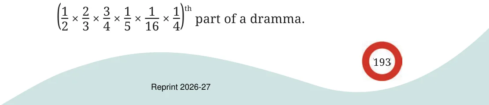

The following problem is translated from Bhāskarāchārya’s (Bhāskara II’s) book, Līlāvatī, written in 1150 CE. “O wise one! A miser gave to a beggar \(\frac{1}{5}\) of 116 of 14 of 12 of 23 of 34 of a dramma. If you know the mathematics of fractions well, tell me O child, how many cowrie shells were given by the miser to the beggar.” Dramma refers to a silver coin used in those times. The tale says that 1 dramma was equivalent to 1280 cowrie shells. Let’s see what fraction of a dramma the person gave:

Evaluating it gives \(\frac{6}{7680}\) . Upon simplifying to its lowest form, we get
\(\frac{6}{7680} = \frac{1}{1280}\) .
So, one cowrie shell was given to the beggar. You can see in the answer Bhāskarāchārya’s humour! The miser had given the beggar only one coin of the least value (cowrie). Around the 12th century, several types of coins were in use in different kingdoms of the Indian subcontinent. Most commonly used were gold coins (called dinars/gadyanas and hunas), silver coins (called drammas/tankas), copper coins (called kasus/panas and mashakas), and cowrie shells. The exact conversion rates between these coins varied depending on the region, time period, economic conditions, weights of coins and their purity. Gold coins had high-value and were used in large transactions and to store wealth. Silver coins were more commonly used in everyday transactions. Copper coins had low-value and were used in smaller transactions. Cowrie shells were the lowest denomination and were used in very small transactions and as change. If we assume 1 gold dinar \(= 12\) silver drammas, 1 silver dramma \(= 4\) copper panas, 1 copper pana \(= 6\) mashakas, and 1 pana \(= 30\) cowrie shells, 1 copper pana \(= \frac{1}{48}\) gold dinar ( \(\frac{1}{12} \times 14) 1\) cowrie shell =____ copper panas 1 cowrie shell =____ gold dinar.